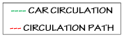

COTM5284 Student Assignment Compilation
Mohammedamin Kedir
INTERNAL VERTICAL AND HORIZONTAL CIRCULATION
ANALYZING INTERNAL CIRCULATION
HORIZONTAL PROGRAM RELATIONSHIP OF GROUND FLOOR
HORIZONTAL PROGRAM RELATIONSHIP OF FIRST FLOOR
- GROUND FLOOR PLAN
- FIRST FLOOR PLAN
- TERRACE FLOOR PLAN
CIRCULATION
-

- The Garage
- The garage, which can accommodate up to three cars, is laid out on a 45 degree angle
- matching the turning circle of car in the 1920’s.
- The semi-circular driveway is constructed to exactly match the turning circle of a 1927 Citroën.
- The arc of the minimum turning circle of a vehicle provides the dimensions of the house.
Le Corbusier aimed to integrate the home and the automobile